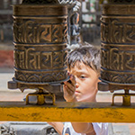

Kathmandu

Explore Kathmandu with its beautiful historic sites. The area Thamel is the center of backpacking in Nepal. It has surprisingly good nightlife and tasty restaurants. A great start of your Nepalese adventure.
Pokhara

Pokhara is for most people their favorite destination in Nepal and there’s a valid reason for that. You can relax at the lake or seeking adventure in the surrounding area. It’s also the starting point for exploring the Annapurna region. You can’t miss Pokhara if you go to Nepal.
Chitwan
Fancy a safari? With tigers, crocodiles and elephants Chitwan National Park is the best place in Nepal to enjoy animals. It was the first national park in Nepal and it’s probably the best.
Lumbini
Lumbini is known as the birthplace of Buddha. If you’re interested in Buddhism you will like this place.
Bhaktapur
Bhaktapur is an open air museum. Despite the 2015 earthquake it’s still a beautiful area with a lot of historic sights. Stay here for a night to get the best experience and connect with the locals.
Patan
If you’re in Kathmandu you’ve to visit Patan. It’s a typical historic site with a lot of tempels. They’re a bit harder to find compared to Bhaktapur but it’s a lot of fun to find them. Especially the golden temple is beautiful.
Dhulikhel
Not a lot of people go to Dhulikhel but it’s one of the best places if you want a view over the Himalaya. It’s a great place to escape from other tourists for a couple days. There’s also an interesting hike to the Namobuddha Monastery.
Everest Basecamp Trek
Looking for a challenge? Hike to the basecamp of Mount Everest and get a taste of climbing to the summit. We explain everything you need to know to prepare yourself for this rewarding hike.
Annapurna Circuit Trek

Probably the most famous hike of Nepal and definitely one of the best hikes in the world. In about 3 weeks you circle around mount Annapurna. A very versatile hike with beautiful sceneries.
Annapurna Sanctuary Trek

Annapurna Sanctuary trek is a short but stunning hike to Annapurna Base Camp. If you don’t have the time to hike to Everest Base Camp or Annapurna Circuit Trek this is a good alternative.